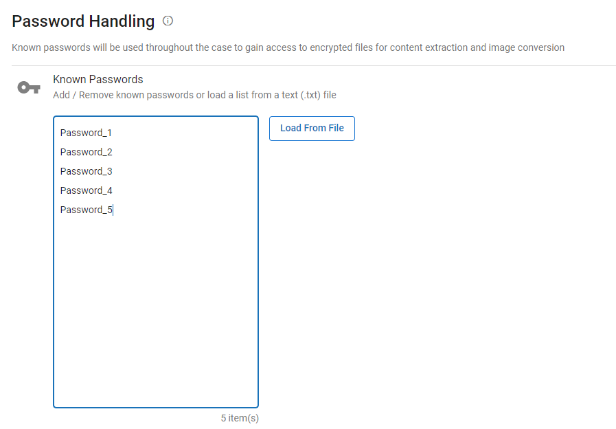

Open Case Management and locate the Processing case whose password list you would like to modify.
Click the hamburger icon corresponding to the needed case.

From the menu that appears, select Case Settings. The work area opens with the Case Details tab already selected.

Scroll down to the Password Handling card. Click the Manage Password Handling button.
On the Password Handling page, add a list of passwords to the case to unlock password-protected documents encountered while processing jobs.
-
To add individual passwords:
-
Click into the Known Passwords box.
-
Enter a password and press Enter to go to the next line. Add only one password to each line and do not include delimiters. Repeat this step for each password that must be added to the list.

-
When finished, click Save.
-
-
To load a pre-defined list of passwords:
-
Click Load from file. The Open dialog box appears.
-
Navigate to the password list.
-
Click Open. The password lists loads.
-
When finished, click the Save button in the top-right corner of the page. If you exit without saving, any changes you made will be lost.
|
|
Note: You can discard any changes you have made by clicking the Cancel button in the top-right corner of the page or by exiting the page. |